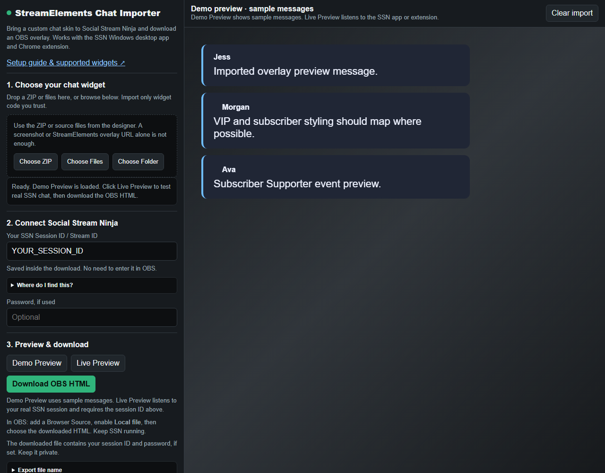

¿Qué funciona?
El importador sirve para widgets de chat personalizados creados para StreamElements o Streamlabs, incluido el componente de chat de un paquete de temas. Necesitas los archivos fuente del widget. No importa una cuenta completa de StreamElements ni un tema a partir de una URL de superposición.
Usa la Aplicación de escritorio de SSN para Windows o extensión de Chrome para capturar el chat. El diseño importado muestra ese chat en OBS. La compatibilidad depende del widget; las funciones de cuenta, como objetivos, fidelidad, tiendas y alertas, pueden necesitar conversión manual.
1. Consigue los archivos del widget
Empieza con el ZIP o la carpeta original del diseñador. Busca HTML, CSS y JavaScript, además de JSON de campos/datos, imágenes y fuentes. Elige un solo widget de chat cuando el paquete incluya varios diseños.
¿Solo tienes un enlace de instalación? Pide al diseñador el código fuente del widget de chat o usa el código disponible en el editor de widgets personalizados de StreamElements. Una captura, un vídeo o una URL de fuente de navegador no se pueden convertir por sí solos.
El código de mi widget está en el editor de StreamElements
Abre el editor de código del widget personalizado. Guarda cada parte disponible como un archivo de texto sin formato independiente: html.txt, css.txt, js.txt, fields.txt y data.txt. Copia el contenido sin añadir formato ni cambiar el JSON. Si no hay archivo de datos, el importador usa los valores predeterminados de los campos.
Elige todos estos archivos juntos mediante Elegir archivos (Choose Files). Incluye las imágenes o fuentes locales; Elegir carpeta (Choose Folder) conserva las rutas de carpetas. Consulta la referencia del editor de código de StreamElements para el código y la estructura de campos.
Importa solo código de confianza: el JavaScript del widget se ejecuta en la vista previa y en la superposición descargada.
2. Abre el importador
En el menú de SSN, debajo de la sección Superposiciones de chat con estilos prediseñados, busca la opción Importar diseño de chat de StreamElements / Streamlabs. Esto introduce tu sesión actual. También puedes buscar en el menú StreamElements o abrir el importador directamente.
Usa Elegir ZIP (Choose ZIP), Elegir archivos (Choose Files) o Elegir carpeta (Choose Folder). Se carga una vista previa de demostración tras procesar los archivos. Revisa los avisos de importación; usa Selección avanzada de archivos si se detectaron archivos fuente incorrectos.

3. Conecta y previsualiza
- Mantén SSN en funcionamiento y confirma que aparezca un mensaje real en su Dock de chat.
- En el importador, revisa el campo ID de sesión de SSN / ID de transmisión. Si está vacío, cópialo desde Opciones de sesión (Session Options) en SSN. No es tu nombre de usuario de Twitch ni de YouTube.
- Introduce la contraseña opcional de sesión si usas una.
- Usa Vista previa de demostración (Demo Preview) para mensajes de ejemplo, y luego Vista previa en vivo (Live Preview) y envía un mensaje nuevo al chat de tu transmisión.
- Si Historial de mensajes (Message history) aparece, ajusta la eliminación temporizada o el número máximo de mensajes.
La vista previa de demostración funciona sin sesión y usa solo mensajes de ejemplo. La vista previa en vivo necesita que llegue chat desde SSN; que esté vacía no significa por sí solo que haya fallado la conexión.
4. Descarga y añade a OBS
- Haz clic en Descargar HTML para OBS (Download OBS HTML) y guárdalo en una ubicación permanente.
- En OBS, añade una Fuente de navegador (Browser Source), activa Archivo local (Local file), y busca ese archivo HTML.
- Establece el ancho y el alto del área de chat y envía otro mensaje para comprobarlo.
Tu sesión ya está incluida; no hace falta editar la URL en OBS. Usa el archivo descargado como fuente de navegador. Mantén SSN y las fuentes de captura de chat funcionando; puedes cerrar el importador y StreamElements.
El archivo exportado contiene tu ID de sesión y la contraseña opcional. Mantenlo privado. Para cambiar después la sesión, la contraseña o los ajustes del widget, importa de nuevo los archivos originales y descarga un sustituto; luego actualiza la fuente de OBS.
Si algo no funciona
- No se encontró código del widget: usa los archivos fuente originales. Las imágenes, los campos/datos por sí solos y los archivos de SSN convertidos anteriormente no son el código fuente del widget.
- La demostración está vacía o se ve mal: revisa HTML/CSS/JS en Selección avanzada de archivos. Proporciona los archivos de campos y datos correspondientes y todos los recursos.
- La demostración funciona, pero la vista previa en vivo está vacía: envía un mensaje nuevo, revisa el Dock de SSN y haz coincidir el ID de sesión y la contraseña.
- La vista en vivo funciona, pero OBS está vacío: revisa el archivo HTML local seleccionado, las dimensiones y la visibilidad de la fuente de navegador, y luego actualiza su caché.
- Faltan fuentes o imágenes: inspecciona el resumen de exportación. Los recursos remotos que no se pudieron incluir siguen necesitando una URL accesible y acceso a Internet.
- Los mensajes desaparecen: ajusta Historial de mensajes si el widget lo ofrece. Algunos widgets controlan la eliminación desde su propio JavaScript.
- Fallan las API de cuenta o los complementos: algunos widgets necesitan cambios de código. Usa la instrucción de conversión del importador o pide ayuda con los archivos originales del widget y una captura del problema, sin compartir las credenciales de tu sesión.
Otras opciones: diseños de chat integrados, CSS personalizado, o Solución de problemas de OBS.